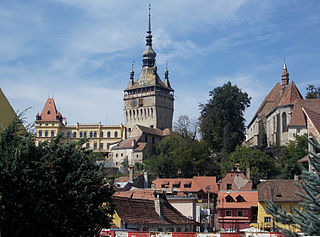

Sighişoara
Descriere
Sighișoara (în dialectul săsesc Schäsbrich, Šesburχ, în germană Schäßburg, în maghiară Segesvár, în latină Saxoburgum / Castrum Sex) este un oraș situat în județul Mureș, Transilvania, România. Municipiul are o populație de 28.102 locuitori (2011). Centru istoric a fost inclus pe Lista monumentelor istorice din județul Mureș, având codul de clasificare MS-II-s-A-15806. De asemenea, centrul istoric este inclus în patrimoniul mondial UNESCO.
